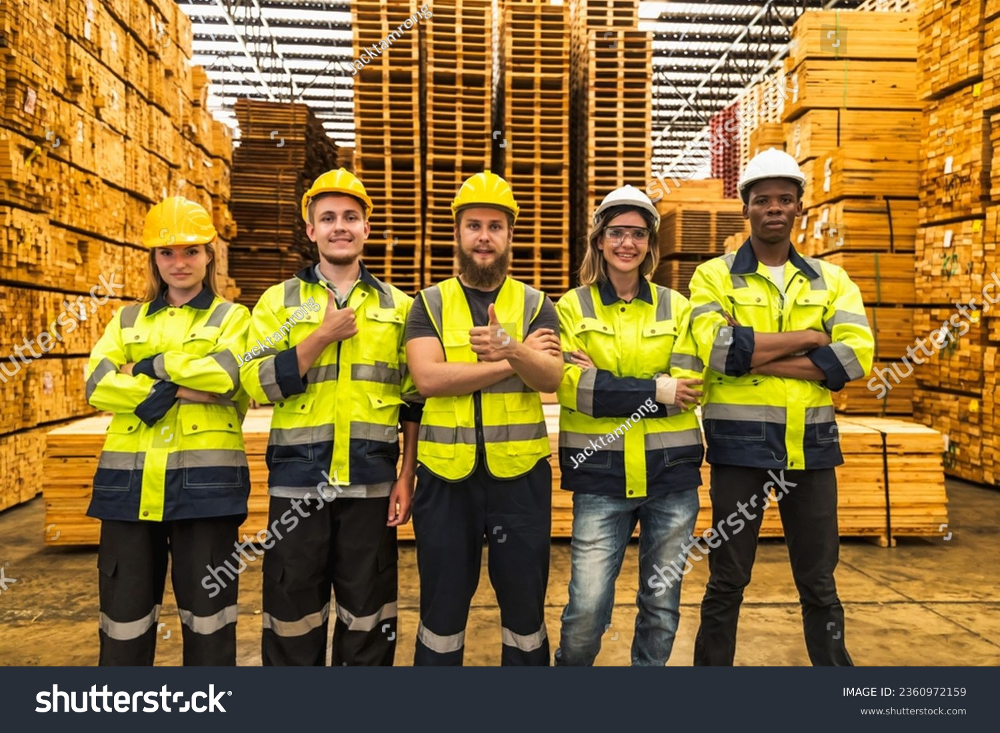
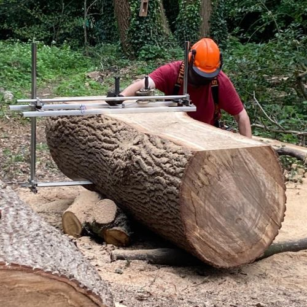
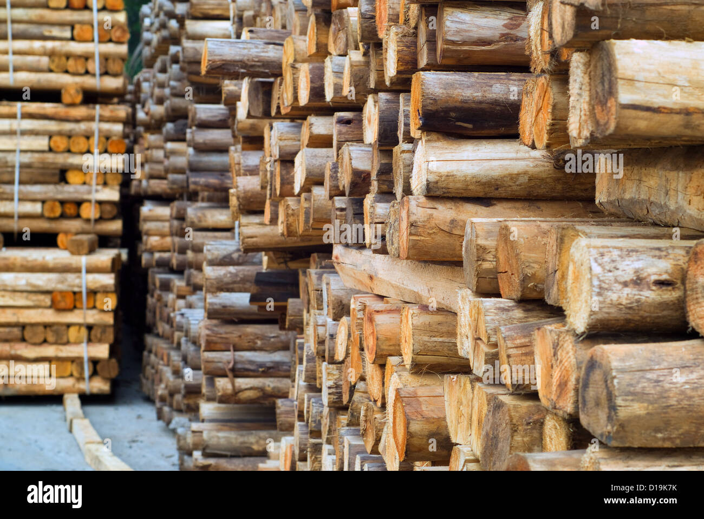
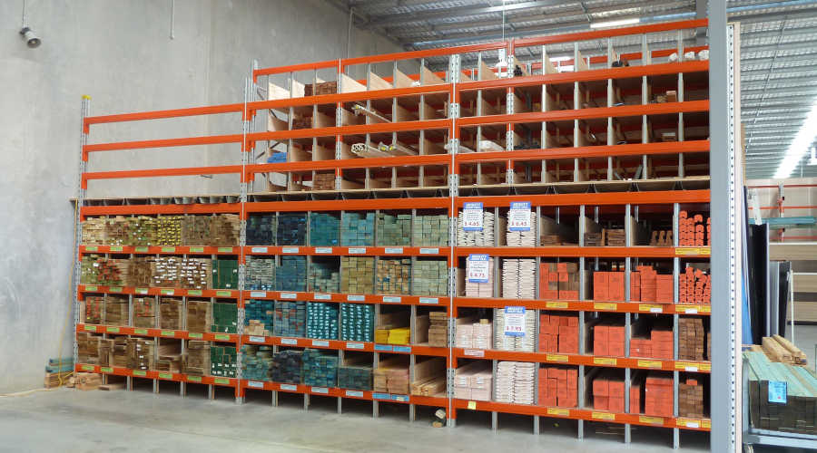
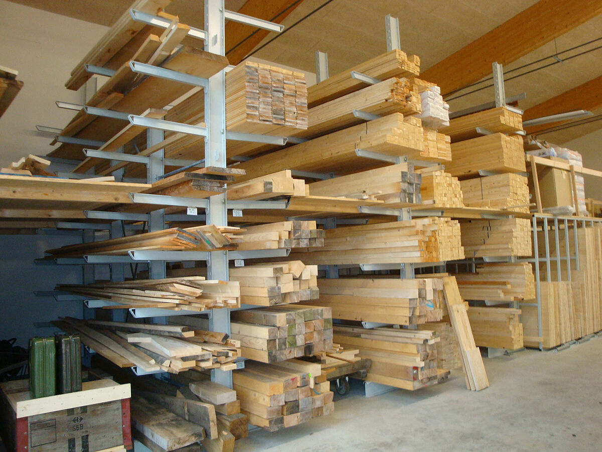
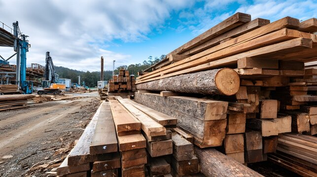

Risposte leggibili
Disponibilita, alternative, tempistiche e fattibilita vengono comunicate senza giri lunghi.
Azienda
La storia di F.lli Rinaldi Legnami e una storia di magazzino reale: persone riconoscibili, clienti professionali, risposte rapide e continuita di rapporto nel tempo.

Come ci vedono i clienti
La forza dell'azienda non e solo nell'assortimento. Sta nel fatto che chi risponde conosce il magazzino, segue le richieste e si assume la responsabilita di dare un'indicazione utile.
Disponibilita, alternative, tempistiche e fattibilita vengono comunicate senza giri lunghi.
Ogni richiesta passa da verifica, preparazione e consegna con un flusso semplice.
Molti clienti restano perche trovano una struttura che riduce attrito e imprevisti.


Spazio, persone, controllo
Gestione dello stock pensata per protezione del materiale, accessibilita e continuita di servizio.
Presenza costruita nel tempo con falegnamerie, imprese e clienti professionali locali.
Ogni rapporto si basa su interlocutori riconoscibili, non su passaggi impersonali.
Alternative di stock, consegne coordinate e risposte tecniche per richieste che cambiano in corsa.
Galleria



Passo successivo
Quantita, misure, destinazione e tempi ci bastano per impostare una risposta utile e veloce.